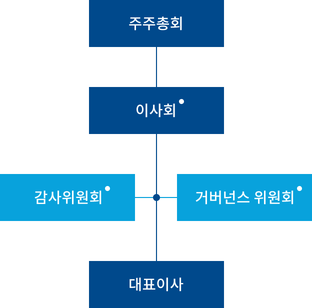
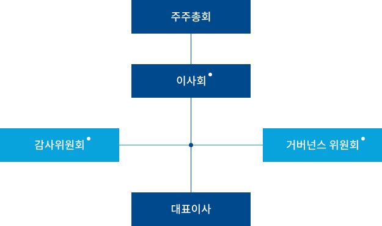

거버넌스 구조
AK홀딩스는 기업의 경영활동과 지배구조의
투명성을 높이기 위한 거버넌스 체계를 구축하고
있으며,
경영투명성 제고를 지향합니다.


-
이사회
사외이사 의장 선임사외이사는 재무, 회계,
법률 등 경영활동의 필수 분야에서 독립적인
시각으로 의견을 제시할 수 있는 전문가 선임 -
감사위원회
사외이사 3인으로 구성되어 경영활동 전반에
대한 감시, 감독, 감사 기능을 수행※ 법상 설치의무 없으나 경영투명성을 위해
선제적 도입 -
거버넌스 위원회
사외이사 3인으로 구성되어 기업활동 및
지배구조에 대한 투명성 제고 및 대규모
내부거래에 대한 검토 기능 수행
이사회 구성 현황
이사회는 총 7명으로(사내이사 4명,
기타비상무이사 1명, 사외이사 2명) 구성되어
있으며,
각 사내이사 및 사외이사는 주요 경력에
따라 전문성을 가진 인물이 각 부문의 책임자로
임명되어 있습니다.
-
사내이사
채 형 석 대표이사 애경그룹 총괄부회장 2021.03.30 선임
-
사내이사
이 석 주 대표이사 CEO 2020.06.26 선임
-
사내이사
이 장 환 CFO 2022.03.29 선임
-
사내이사
이 상 신 CHRO 2022.03.29 선임
-
기타비상무이사
채 동 석 애경산업 대표이사 2021.03.30 선임
-
사외이사
이 삼 규 이사회 의장 2021.03.30 선임
-
사외이사
류 환 열 감사위원회 위원장 2022.03.29 선임